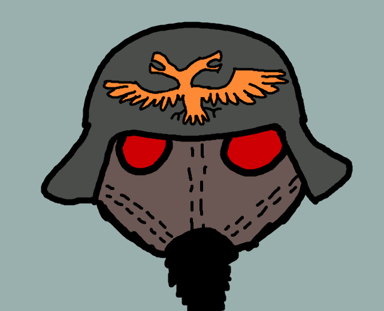

Imperium of Man
Mankind of the 41st millennium. United under the empire, spanning thousands of planets across the galaxy. Humanity worships and serves the God Emperor of Mankind. A once powerful warrior and leader of humanity, he has sat in his golden throne, a rotting corpse being kept alive by the sacrifice of 1,000 human souls daily. His powerful Psyker abilities still guide humanity.
Humanity fights a never ending battle against the forces that would see their destruction, as well as anything deemed heretical to the Cult of the Imperium. The Imperium forces range from standard human foot soldiers, to the powerful genetically and mechanically enhanced Space Marines, to giant mechs powered by the consciousness of human warriors fallen in battle.
There are many different subfactions of the Imperium of Man to delve into. There are many different chapters of Space Marines. Each with their own color schemes, style, personalities, beliefs, and motivations. For example the beloved Salamanders, a chapter donning striking green power armor and wielding their iconic weapons of choice, flamers! Notably the most compassionate and caring of the Space Marines. Or my personal favorite: The Black Templars. A chapter of Space Marines donning all black power armor taking on a Knight aesthetic. They are on a never ending crusade to purge the galaxy of hereasy and xenos scum! Other than Space Marines we also have the Adeptus Custodes. The personal guards to the Emperor himself! These warriors are giant, towering over the Space Marines who already tower over the average man. They specialize in swordsmanship and have a cool ancient Roman warrior aesthetic. Another cool subfaction is the Grey Knights. These warriors are the strongest users of psychic abilities in the Imperium of Man and they are genetically crafted using the genetics of the Emperor. They specialize in slaying daemons, their magic power able to resist and match the powerful magic wielded by the forces of Chaos.
The Orks
Waaagh! The Orks are the funniest and goofiest faction of Warhammer 40k. And hilariously they are one of the greater threats the galaxy has to face. They’re like an annoying itch that won’t go away! If you’ve seen The Lord of the Rings, you’ve got the right idea. They are goofy green guys with british accents that carry big axes and clubs. They also have their own strange technology and weapons. One of the unique characteristics of the Orks is their ability to make things magically happen just because they think it will. They can scrabble up a bunch of garbage and turn it into a vehicle that should in no way work but because they think it will, it does work! They can build impossible technology and take it to war and it only works because they think it will work! The Orks usually listen to the biggest ork because he knows best because he’s the biggest and he leads them on a war party! The Orks biology is part fungus. They are able to reproduce by spreading spores through the air so even after the Orks are wiped out they can still grow out of the ground of the battlefield! The Imperium of Man has to incinerate the entire battlefield with fire to prevent the Orks from respawning after they’ve been slain. A great faction to pick up for the table top, with wacky rules to go along with their wacky nature. If you want some goofy silliness in the super serious grim dark future of the 41st millennium, then the Orks are the faction for you!
The Tyranids

It’s not a sci-fi story if there isn’t a horrible swarm of bug-like alien creatures that our heroes have to fend off endlessly with a hail of machine gun fire. The Tyranids are about as horrifying as it gets. If I had to fight on behalf of the Emperor I really don’t want to be facing the Tyranids.
The Tyranids are a species of alien creatures that have infiltrated the Milky Way galaxy from all sides, implying that they have the galaxy surrounded. The Tyranids are all united and controlled by the Hive Mind. Each Tyranid doesn’t think for itself, it just enacts its purpose and will of the Hive Mind. The Tyranids sole purpose is to kill and devour all organic material in the galaxy. The organic material they consume is then used to create more powerful and deadly Tyranids to add to the galaxy conquering swarm. The Tyranids evolve themselves to combat the threats they might come across, evolving to be able to destroy any resistance they face. Their design is very much inspired by the Xenomorphs from Alien. If you want to play a nightmarish, relentless, unstoppable race of alien killing machines then the Tyranids are for you.
Chaos
In the Warhammer 40k universe, there is a dimension source to the magic abilities able to be used by all species of the universe. This dimension is known as The Warp. This magic power was wielded by the Emperor and to this day on his throne he is still using his connection to the warp to provide the Imperium of Man with the power to travel at lightspeed. However, this dimension is also home to something else… Chaos.
Chaos is the energy born from the raw emotions, desires, and ambitions of all living things. It can equally be wielded for good and evil, though in 40k it's mostly evil. This power of Chaos has given birth to the Chaos gods, evil entities that seek to corrupt and taint all they can get their hands on. After the Horus Heresy, half of the entire Space Marine legion turned away from the Imperium of Man and the Emperor and chose to worship and serve the Chaos gods. Those who turn towards chaos are corrupted, their free will often taken away from them. In exchange they are given evil powers to corrupt and destroy their enemies with.
Chaos is very complex in Warhammer 40k, all the factions of Chaos and the Chaos gods have their own ideals and beliefs. Here I will detail my favorite of the Chaos gods: Nurgle: god of disease, decay, and death. Nurgle is a creator of sickness and he spreads and infects the galaxy with his horrible pestilence. Those who serve Nurgle embarrass filth, their bodies are rotting and putrid. Nurgle commands a legion of demons to spread his plagues as well as a legion of Chaos Space Marines called the Death Guard. These astartes are infected with all manner of diseases, their bodies are mutated and rotting inside of their power armor.